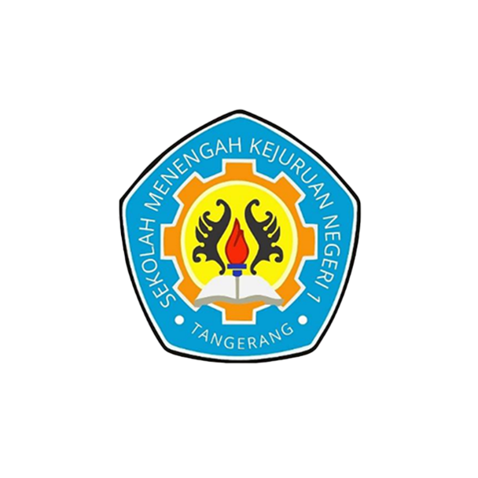

|

Profil SMK Negeri 1 Tangerang
- Nama Resmi: SMK Negeri 1 Tangerang
- NPSN: 20606915
- Status / Akreditasi: Negeri / Terakreditasi A
- Kepala Sekolah: Arif Prio Wibowo
- Alamat: Jl. Perintis Kemerdekaan II, Babakan, Kec. Tangerang, Kota Tangerang, Banten 15118
- Kontak: (021) 5522534
- Email: info@smk1-tng.sch.id
- Luas Tanah: 14.685 m²
- Waktu Belajar: Sehari penuh 5 hari
- Kurikulum: Kurikulum Merdeka
Jurusan & Konsentrasi Keahlian
- Teknik Ketenagalistrikan (Teknik Instalasi Tenaga Listrik)
- Teknik Jaringan Komputer dan Telekomunikasi
- Desain Komunikasi Visual
- Pemasaran (Bisnis Retail)
- Manajemen Perkantoran dan Layanan Bisnis
- Akuntansi dan Keuangan Lembaga
|
Tautan Eksternal
- Website Sabilly
- Wikipedia
- W3School
|